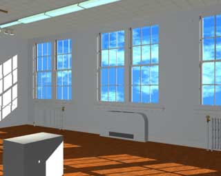
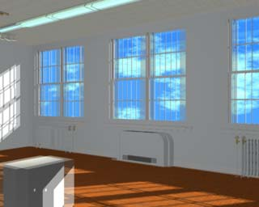

VIS 315
For the final project of a Visual Arts computer graphics class, I created an installation of stereo-projections. I modeled a gallery using Alias and rendered onto slides five stereo views of the room.
The slides were then placed into viewers, which were suspended with fishing line. Each viewer was positioned at the same point in the actual room as the corresponding stereo view was rendered from in the Alias model.
When a person looked through one of the viewers, they would see the room transformed in some way. For instance, there were two empty pedestals in the actual room, while in two of the stereo views, there is something resting on the pedestals.


left and right eye-views superimposed